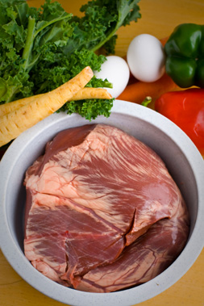

The raw diet for pets has been in the media spotlight recently and in this feature we'll look to investigate whether it's the nutritional phenomenon that its advocates profess or just a bag of meat and bones.
Raw feeding - a brief history
Feeding pets a raw diet is definitely nothing new and dog and cat owners have been sourcing meat and preparing home-made diets at home for decades. What was originally a traditional diet used by keen dog trainers, breeders and kennel owners who would visit a local butcher or abattoir to get stocks of meat on the bone or soft juicy offal, has now developed into a mainstream feeding choice for millions of pet owners around the world.
Traditionally these early raw feeders found it easy to source tripe, beef, lamb and poultry with nearly every town or city having a local abattoir supplying local butchers. In time, the introduction of meat movement controls and the mass production of meat processed for sale in supermarkets coincided in the 80's and early 90's with the advent of complete dried kibbles which were marketed as the convenient way to feed pets.
Giant food corporations merged time and time again and pet food production came under the control of such companies as Mars, Nestle, Proctor and gamble, Colgate and more recently Del Monte. Names not too commonly associated by consumers with brands such as Pedigree, Whiskas, Felix, Bakers, James Welbeloved, Iams and Hills Science products.
While general consumers were being served a variety of "serve and go" pet foods , keen pet owners were talking at breed shows and dog club events about a variety of health and condition issues that they felt related to diet.
In the 90's this coincided with the publication of various books about raw feeding and a diet that was based upon the traditions of feeding of raw natural meat, bones and a variety of vegetable or fruit matter and BARF was born.
Early BARF feeders found an immediate solution to some of the health issues they had been experiencing with coat conditions, bowel movements, appetite and vitality improving in pets that had been in poor condition for months.
Today raw feeding is increasing in popularity from the early days of BARF to answer demand for savvy consumers and pet owners who now fully understand the impacts on health from highly processed food products produced with colours, preservatives and ingredients that are not normally associated with a healthy diet.
Pet owners are turning away from large giant brands, preferring to choose home made products or locally sourced ingredients for themselves and their pets. In upcoming articles we will instigate further the raw diet and some of the many professionally prepared complete raw meals now readily available.
Is it a raw nutritional phenomenon or just a bag of meat and bones?
The raw diet comes in so many different formats and everyone seems to be an expert raw feeder. From true BARFers to Raw meaty bones believers there's an abundance of information about raw feeding now readily available across the internet and through professional raw meal providers around the world. The raw diet can sometimes become very confusing with social networking groups advocating one style of raw feeding and others saying that their way of raw feeding is best. From the early days of a BARF diet of just 80% meat and bones combined with 20% pulped vegetables and fruits our knowledge of nutrition and what our pets can digest and thrive upon has grown in line with the variety of meals recommended to us by fellow raw feeders. The main concept of all raw feeding diets though is a base of fresh raw meat either on the bone or pre -ground with some natural bone content. Whilst many groups will focus upon the bone content and the percentage ratios of meat to bone, the simple rule of thumb is that the meat should be in natural proportions with the portion fed to pets. Fresh meat on the bone or ground meat and bone in natural proportions is ideal for most pets with a an occasional play bone or chewing meaty bone served as an after dinner treat, rather than part of the meal. Adding lots of bones or added bone powders can sometimes work against the raw diet and lead to digestive issues, constipation or even blocked bowels.
In reality, the remainder of the raw diet allows lots of raw feeders to use their imagination and a variety of different ingredients is commonly prepared by raw feeders from pulped vegetables, fruits, yams, eggs, pulses, berries, supplements and much more.
The heart of the raw diet is the meat protein and this is what most dogs and cats thrive upon. The rest of the diet is delivering balanced nutrition in the same way as we ourselves are educated to eat a variety of foods. A balanced meal for us has been considered as suitable for our pets and good clean ingredients which we use are often appropriate for our pets.
Is a raw food complete and balanced?
Pet food manufacturers have spent years developing products that we are told are "complete and balanced" telling consumers that we don't have the ability to be able to make nutritional judgements about our pets. Simply, there's years of science been applied to understand what pets require in their diet and interestingly it's a sensible portion of protein, a sensible level of fat intake, a source of vitamins and minerals and fibre to maintain digestion. It's ironic that all of these nutritional qualities are commonly found in lots of foods which don't confuse pet owners with planned science diets that seem to want to lead the pet owner to feel their pet "needs" a special diet to live.
As pet owners we are all responsible for the nutrition we provide to our pets and raw feeding is about providing a variety of foods that deliver the nutrition that your pet requires. From the traditional roots of BARF have grown raw feeding experts who have studied the raw ingredients and today provide a range of nutritionally balanced meals which are made to deliver the balanced nutrition that some raw feeders want but haven't got the time or facilities to home make.
Use the filters on the Dog Food Directory to see a list of complete and complementary raw foods.
Is raw food safe?
The pet food industry would profess that feeding a raw diet can pose a potential risk to health with the cross contamination of bacteria. Salmonella is often quoted as the bacteria that the raw diet causes when in effect, the raw food is simply an ingredient in a meal in the same way that we purchase ingredients for ourselves. Dogs and cats have lived in homes for decades and the raw diet is probably one of the oldest diets eaten by the earliest dogs and cats that cohabited with humans. The drive for large producers is to continue to provide sterilised foods for our pets in the same way that they used to for humans. Its now accepted that a sterile environment doesn't allow immunity to develop and be maintained and raw fed pets seem to thrive in the same way with advocates reporting that their pets have been healthy and not visited the vet. One major UK vet practice now published a plan especially for pets fed on a raw diet and forward thinking vets are now recommending a raw diet to pets suffering from specific dietary issues.
EU registered raw pet food producers are some of the most stringently regulated in the world with regular microbe tests forming part of their licence to produce and sell their prepared raw diets.
Ultimately though, raw feeding is all about home hygiene: washing of hands and utensils and careful preparation of raw foods in the home in the same way we prepare meals for ourselves.
Where can I buy pre-prepared raw pet foods?
There are three main sources of raw pet foods if you want to purchase a professionally made raw meal for your pet from a registered raw pet food supplier. Raw pet foods are most commonly found on sale in all leading pet superstores, independent pet stores, via leading producers who will deliver to your home on refrigerated vans or by parcel delivery companies whose parcels arrive in insulated boxes.
There's an abundance of local and national suppliers and a mix of services and prices available in stores and on the internet. A search on All About Dog Food can direct you to the main providers in the UK with some of the useful facts below helping you to source a supplier:
Stores selling raw pet foods include Kennelgate, Pets at Home, Jollyes, Pets corner, Pampurred pets, Just for Pets and over 900 independent pet stores who have freezers full of raw ingredients and prepared complete meals.
Firstly look at their range, packaging, knowledge, service and price. A good supplier should be registered with Defra and able to demonstrate this. Products need to be freshly made, well packed and really well frozen right up to the point of delivery. Defrosted meats need to be consumed and not refrozen ideally. Quality of the products, variety of range and convenience are usually key choices and this can vary from supplier to supplier.
About the author
Craig Taylor has been producing raw foods since 1981. He is one of the industry's top raw feeding experts and his company, Natures Menu, is a not only a major campaigner for fair pet food legislation but is also the only entity in the UK currently investing in scientific raw food research.
References
1. Ross SJ, Osborne CA, Kirk CA, et al. Clinical evaluation of dietary modification for treatment of spontaneous chronic kidney disease in cats. J Am Vet Med Assoc 2006;229:949-957.
2. Jacob F, Polzin DJ, Osborne CA, et al. Clinical evaluation of dietary modification for treatment of spontaneous chronic renal failure in dogs. J Am Vet Med Assoc 2002;220:1163-1170.
3. Cortadellas O, Fernandez del Palacio MJ, Talavera J, et al. Calcium and phosphorus homeostasis in dogs with spontaneous chronic kidney disease at different stages of severity. J Vet Intern Med 2010;24:73-79.
 Raw feeding - a brief history
Raw feeding - a brief history